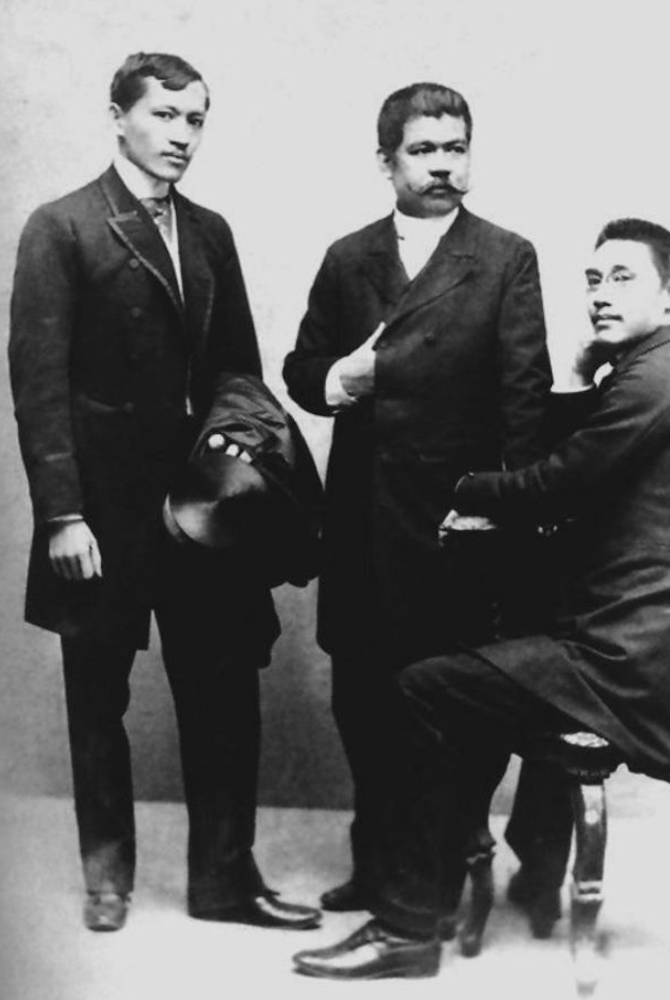

The term ilustrados refers to the group of educated Filipino men who were active in the late 19th century. The members of this group were often away from their home country, interacting with new ideas, literature, and experiences. The topics of discussion often included colonial oppression, the need for reforms, education, representation, and equality.